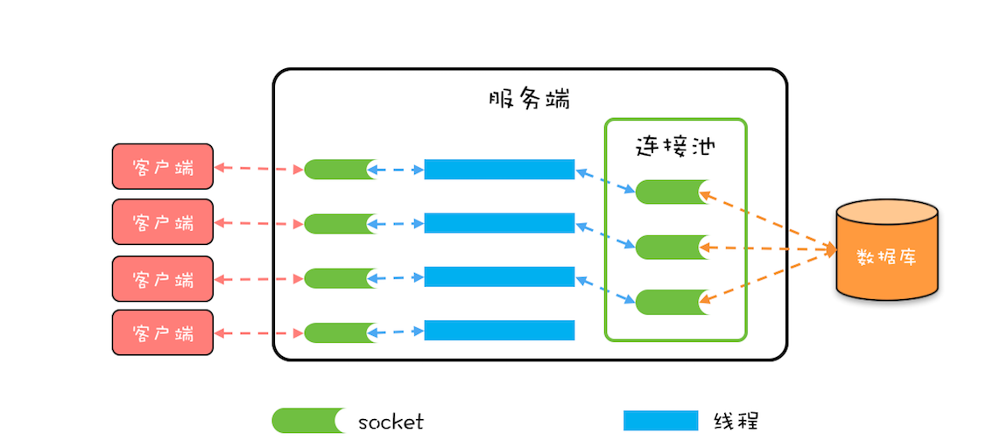

- 00 学习攻略 如何才能学好并发编程？.md.html
- 00 开篇词 你为什么需要学习并发编程？.md.html
- 01 可见性、原子性和有序性问题：并发编程Bug的源头.md.html
- 02 Java内存模型：看Java如何解决可见性和有序性问题.md.html
- 03 互斥锁（上）：解决原子性问题.md.html
- 04 互斥锁（下）：如何用一把锁保护多个资源？.md.html
- 05 一不小心就死锁了，怎么办？.md.html
- 06 用“等待-通知”机制优化循环等待.md.html
- 07 安全性、活跃性以及性能问题.md.html
- 08 管程：并发编程的万能钥匙.md.html
- 09 Java线程（上）：Java线程的生命周期.md.html
- 10 Java线程（中）：创建多少线程才是合适的？.md.html
- 11 Java线程（下）：为什么局部变量是线程安全的？.md.html
- 12 如何用面向对象思想写好并发程序？.md.html
- 13 理论基础模块热点问题答疑.md.html
- 14 Lock和Condition（上）：隐藏在并发包中的管程.md.html
- 15 Lock和Condition（下）：Dubbo如何用管程实现异步转同步？.md.html
- 16 Semaphore：如何快速实现一个限流器？.md.html
- 17 ReadWriteLock：如何快速实现一个完备的缓存？.md.html
- 18 StampedLock：有没有比读写锁更快的锁？.md.html
- 19 CountDownLatch和CyclicBarrier：如何让多线程步调一致？.md.html
- 20 并发容器：都有哪些“坑”需要我们填？.md.html
- 21 原子类：无锁工具类的典范.md.html
- 22 Executor与线程池：如何创建正确的线程池？.md.html
- 23 Future：如何用多线程实现最优的“烧水泡茶”程序？.md.html
- 24 CompletableFuture：异步编程没那么难.md.html
- 25 CompletionService：如何批量执行异步任务？.md.html
- 26 Fork_Join：单机版的MapReduce.md.html
- 27 并发工具类模块热点问题答疑.md.html
- 28 Immutability模式：如何利用不变性解决并发问题？.md.html
- 29 Copy-on-Write模式：不是延时策略的COW.md.html
- 3 个用户来信 打开一个新的并发世界.md.html
- 30 线程本地存储模式：没有共享，就没有伤害.md.html
- 31 Guarded Suspension模式：等待唤醒机制的规范实现.md.html
- 32 Balking模式：再谈线程安全的单例模式.md.html
- 33 Thread-Per-Message模式：最简单实用的分工方法.md.html
- 34 Worker Thread模式：如何避免重复创建线程？.md.html
- 35 两阶段终止模式：如何优雅地终止线程？.md.html
- 36 生产者-消费者模式：用流水线思想提高效率.md.html
- 37 设计模式模块热点问题答疑.md.html
- 38 案例分析（一）：高性能限流器Guava RateLimiter.md.html
- 39 案例分析（二）：高性能网络应用框架Netty.md.html
- 40 案例分析（三）：高性能队列Disruptor.md.html
- 41 案例分析（四）：高性能数据库连接池HiKariCP.md.html
- 42 Actor模型：面向对象原生的并发模型.md.html
- 43 软件事务内存：借鉴数据库的并发经验.md.html
- 44 协程：更轻量级的线程.md.html
- 45 CSP模型：Golang的主力队员.md.html
- 用户来信 真好，面试考到这些并发编程，我都答对了！.md.html
- 结束语 十年之后，初心依旧.md.html
- 捐赠
41 案例分析（四）：高性能数据库连接池HiKariCP
实际工作中，我们总会难免和数据库打交道；只要和数据库打交道，就免不了使用数据库连接池。业界知名的数据库连接池有不少，例如c3p0、DBCP、Tomcat JDBC Connection Pool、Druid等，不过最近最火的是HiKariCP。
HiKariCP号称是业界跑得最快的数据库连接池，这两年发展得顺风顺水，尤其是Springboot 2.0将其作为默认数据库连接池后，江湖一哥的地位已是毋庸置疑了。那它为什么那么快呢？今天咱们就重点聊聊这个话题。
什么是数据库连接池
在详细分析HiKariCP高性能之前，我们有必要先简单介绍一下什么是数据库连接池。本质上，数据库连接池和线程池一样，都属于池化资源，作用都是避免重量级资源的频繁创建和销毁，对于数据库连接池来说，也就是避免数据库连接频繁创建和销毁。如下图所示，服务端会在运行期持有一定数量的数据库连接，当需要执行SQL时，并不是直接创建一个数据库连接，而是从连接池中获取一个；当SQL执行完，也并不是将数据库连接真的关掉，而是将其归还到连接池中。

数据库连接池示意图
在实际工作中，我们都是使用各种持久化框架来完成数据库的增删改查，基本上不会直接和数据库连接池打交道，为了能让你更好地理解数据库连接池的工作原理，下面的示例代码并没有使用任何框架，而是原生地使用HiKariCP。执行数据库操作基本上是一系列规范化的步骤：
- 通过数据源获取一个数据库连接；
- 创建Statement；
- 执行SQL；
- 通过ResultSet获取SQL执行结果；
- 释放ResultSet；
- 释放Statement；
- 释放数据库连接。
下面的示例代码，通过 ds.getConnection() 获取一个数据库连接时，其实是向数据库连接池申请一个数据库连接，而不是创建一个新的数据库连接。同样，通过 conn.close() 释放一个数据库连接时，也不是直接将连接关闭，而是将连接归还给数据库连接池。
//数据库连接池配置
HikariConfig config = new HikariConfig();
config.setMinimumIdle(1);
config.setMaximumPoolSize(2);
config.setConnectionTestQuery("SELECT 1");
config.setDataSourceClassName("org.h2.jdbcx.JdbcDataSource");
config.addDataSourceProperty("url", "jdbc:h2:mem:test");
// 创建数据源
DataSource ds = new HikariDataSource(config);
Connection conn = null;
Statement stmt = null;
ResultSet rs = null;
try {
// 获取数据库连接
conn = ds.getConnection();
// 创建Statement
stmt = conn.createStatement();
// 执行SQL
rs = stmt.executeQuery("select * from abc");
// 获取结果
while (rs.next()) {
int id = rs.getInt(1);
......
}
} catch(Exception e) {
e.printStackTrace();
} finally {
//关闭ResultSet
close(rs);
//关闭Statement
close(stmt);
//关闭Connection
close(conn);
}
//关闭资源
void close(AutoCloseable rs) {
if (rs != null) {
try {
rs.close();
} catch (SQLException e) {
e.printStackTrace();
}
}
}
HiKariCP官方网站解释了其性能之所以如此之高的秘密。微观上HiKariCP程序编译出的字节码执行效率更高，站在字节码的角度去优化Java代码，HiKariCP的作者对性能的执着可见一斑，不过遗憾的是他并没有详细解释都做了哪些优化。而宏观上主要是和两个数据结构有关，一个是FastList，另一个是ConcurrentBag。下面我们来看看它们是如何提升HiKariCP的性能的。
FastList解决了哪些性能问题
按照规范步骤，执行完数据库操作之后，需要依次关闭ResultSet、Statement、Connection，但是总有粗心的同学只是关闭了Connection，而忘了关闭ResultSet和Statement。为了解决这种问题，最好的办法是当关闭Connection时，能够自动关闭Statement。为了达到这个目标，Connection就需要跟踪创建的Statement，最简单的办法就是将创建的Statement保存在数组ArrayList里，这样当关闭Connection的时候，就可以依次将数组中的所有Statement关闭。
HiKariCP觉得用ArrayList还是太慢，当通过 conn.createStatement() 创建一个Statement时，需要调用ArrayList的add()方法加入到ArrayList中，这个是没有问题的；但是当通过 stmt.close() 关闭Statement的时候，需要调用 ArrayList的remove()方法来将其从ArrayList中删除，这里是有优化余地的。
假设一个Connection依次创建6个Statement，分别是S1、S2、S3、S4、S5、S6，按照正常的编码习惯，关闭Statement的顺序一般是逆序的，关闭的顺序是：S6、S5、S4、S3、S2、S1，而ArrayList的remove(Object o)方法是顺序遍历查找，逆序删除而顺序查找，这样的查找效率就太慢了。如何优化呢？很简单，优化成逆序查找就可以了。
逆序删除示意图
HiKariCP中的FastList相对于ArrayList的一个优化点就是将 remove(Object element) 方法的查找顺序变成了逆序查找。除此之外，FastList还有另一个优化点，是 get(int index) 方法没有对index参数进行越界检查，HiKariCP能保证不会越界，所以不用每次都进行越界检查。
整体来看，FastList的优化点还是很简单的。下面我们再来聊聊HiKariCP中的另外一个数据结构ConcurrentBag，看看它又是如何提升性能的。
ConcurrentBag解决了哪些性能问题
如果让我们自己来实现一个数据库连接池，最简单的办法就是用两个阻塞队列来实现，一个用于保存空闲数据库连接的队列idle，另一个用于保存忙碌数据库连接的队列busy；获取连接时将空闲的数据库连接从idle队列移动到busy队列，而关闭连接时将数据库连接从busy移动到idle。这种方案将并发问题委托给了阻塞队列，实现简单，但是性能并不是很理想。因为Java SDK中的阻塞队列是用锁实现的，而高并发场景下锁的争用对性能影响很大。
//忙碌队列
BlockingQueue<Connection> busy;
//空闲队列
BlockingQueue<Connection> idle;
HiKariCP并没有使用Java SDK中的阻塞队列，而是自己实现了一个叫做ConcurrentBag的并发容器。ConcurrentBag的设计最初源自C#，它的一个核心设计是使用ThreadLocal避免部分并发问题，不过HiKariCP中的ConcurrentBag并没有完全参考C#的实现，下面我们来看看它是如何实现的。
ConcurrentBag中最关键的属性有4个，分别是：用于存储所有的数据库连接的共享队列sharedList、线程本地存储threadList、等待数据库连接的线程数waiters以及分配数据库连接的工具handoffQueue。其中，handoffQueue用的是Java SDK提供的SynchronousQueue，SynchronousQueue主要用于线程之间传递数据。
//用于存储所有的数据库连接
CopyOnWriteArrayList<T> sharedList;
//线程本地存储中的数据库连接
ThreadLocal<List<Object>> threadList;
//等待数据库连接的线程数
AtomicInteger waiters;
//分配数据库连接的工具
SynchronousQueue<T> handoffQueue;
当线程池创建了一个数据库连接时，通过调用ConcurrentBag的add()方法加入到ConcurrentBag中，下面是add()方法的具体实现，逻辑很简单，就是将这个连接加入到共享队列sharedList中，如果此时有线程在等待数据库连接，那么就通过handoffQueue将这个连接分配给等待的线程。
//将空闲连接添加到队列
void add(final T bagEntry){
//加入共享队列
sharedList.add(bagEntry);
//如果有等待连接的线程，
//则通过handoffQueue直接分配给等待的线程
while (waiters.get() > 0
&& bagEntry.getState() == STATE_NOT_IN_USE
&& !handoffQueue.offer(bagEntry)) {
yield();
}
}
通过ConcurrentBag提供的borrow()方法，可以获取一个空闲的数据库连接，borrow()的主要逻辑是：
- 首先查看线程本地存储是否有空闲连接，如果有，则返回一个空闲的连接；
- 如果线程本地存储中无空闲连接，则从共享队列中获取。
- 如果共享队列中也没有空闲的连接，则请求线程需要等待。
需要注意的是，线程本地存储中的连接是可以被其他线程窃取的，所以需要用CAS方法防止重复分配。在共享队列中获取空闲连接，也采用了CAS方法防止重复分配。
T borrow(long timeout, final TimeUnit timeUnit){
// 先查看线程本地存储是否有空闲连接
final List<Object> list = threadList.get();
for (int i = list.size() - 1; i >= 0; i--) {
final Object entry = list.remove(i);
final T bagEntry = weakThreadLocals
? ((WeakReference<T>) entry).get()
: (T) entry;
//线程本地存储中的连接也可以被窃取，
//所以需要用CAS方法防止重复分配
if (bagEntry != null
&& bagEntry.compareAndSet(STATE_NOT_IN_USE, STATE_IN_USE)) {
return bagEntry;
}
}
// 线程本地存储中无空闲连接，则从共享队列中获取
final int waiting = waiters.incrementAndGet();
try {
for (T bagEntry : sharedList) {
//如果共享队列中有空闲连接，则返回
if (bagEntry.compareAndSet(STATE_NOT_IN_USE, STATE_IN_USE)) {
return bagEntry;
}
}
//共享队列中没有连接，则需要等待
timeout = timeUnit.toNanos(timeout);
do {
final long start = currentTime();
final T bagEntry = handoffQueue.poll(timeout, NANOSECONDS);
if (bagEntry == null
|| bagEntry.compareAndSet(STATE_NOT_IN_USE, STATE_IN_USE)) {
return bagEntry;
}
//重新计算等待时间
timeout -= elapsedNanos(start);
} while (timeout > 10_000);
//超时没有获取到连接，返回null
return null;
} finally {
waiters.decrementAndGet();
}
}
释放连接需要调用ConcurrentBag提供的requite()方法，该方法的逻辑很简单，首先将数据库连接状态更改为STATE_NOT_IN_USE，之后查看是否存在等待线程，如果有，则分配给等待线程；如果没有，则将该数据库连接保存到线程本地存储里。
//释放连接
void requite(final T bagEntry){
//更新连接状态
bagEntry.setState(STATE_NOT_IN_USE);
//如果有等待的线程，则直接分配给线程，无需进入任何队列
for (int i = 0; waiters.get() > 0; i++) {
if (bagEntry.getState() != STATE_NOT_IN_USE
|| handoffQueue.offer(bagEntry)) {
return;
} else if ((i & 0xff) == 0xff) {
parkNanos(MICROSECONDS.toNanos(10));
} else {
yield();
}
}
//如果没有等待的线程，则进入线程本地存储
final List<Object> threadLocalList = threadList.get();
if (threadLocalList.size() < 50) {
threadLocalList.add(weakThreadLocals
? new WeakReference<>(bagEntry)
: bagEntry);
}
}
总结
HiKariCP中的FastList和ConcurrentBag这两个数据结构使用得非常巧妙，虽然实现起来并不复杂，但是对于性能的提升非常明显，根本原因在于这两个数据结构适用于数据库连接池这个特定的场景。FastList适用于逆序删除场景；而ConcurrentBag通过ThreadLocal做一次预分配，避免直接竞争共享资源，非常适合池化资源的分配。
在实际工作中，我们遇到的并发问题千差万别，这时选择合适的并发数据结构就非常重要了。当然能选对的前提是对特定场景的并发特性有深入的了解，只有了解到无谓的性能消耗在哪里，才能对症下药。
欢迎在留言区与我分享你的想法，也欢迎你在留言区记录你的思考过程。感谢阅读，如果你觉得这篇文章对你有帮助的话，也欢迎把它分享给更多的朋友。
© 2019 - 2023 Liangliang Lee. Powered by gin and hexo-theme-book.